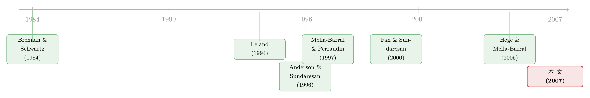

越能谈，越借不到：把「债该长什么样」算回一场讨价还价
本文读的是 Hackbarth, Hennessy & Leland (2007, Review of Financial Studies)：在一个标准的「税盾 vs. 破产成本」权衡 (trade-off) 框架里，作者只给银行债加上了一项特殊能力——可以在正式破产程序之外私下重谈利息。仅凭这一条，模型就同时解释了三件经验事实：为什么年轻/小公司只借银行债、为什么成熟/大公司混用银行债与市场债、以及为什么银行债总是优先 (senior)。更妙的是，「灵活」本身既是银行债的优点，又是它的天花板——正因为太容易重谈，银行债的容量反而被卡死了。
1 一个被权衡理论回避了三十年的问题
权衡理论是公司金融的老课题了：公司借钱有税盾的好处，但借太多会撞上破产成本，于是存在一个最优杠杆。从 Brennan and Schwartz (1984) 到 Leland (1994)，再到 Goldstein, Ju and Leland (2001)，一代又一代结构化模型把「借多少」这件事算得越来越精细。
但你有没有注意到，这些模型从头到尾都在回避一个问题：公司发的是哪一种债？
现实里，一家公司的负债从来不是铁板一块。它一边欠着银行的贷款，一边发着公开市场的债券；银行债往往优先、有抵押，市场债往往次级、分散。这套「债务结构 (debt structure)」——市场债与非市场债的配比，以及它们之间的优先级安排——恰恰是 Brennan-Schwartz、Leland 们集体沉默的地方。原因很简单：这些模型从设定上就只允许公司发一类债。
这种沉默是要付代价的。Hart and Moore (1995) 就直接开炮说，「这些方法解释不了现实中观察到的那些债权种类」。于是公司金融学家纷纷转向各种各样的故事——市场分割、发行规模经济、银行的认证作用、监督激励——来解释债务结构。
本文的野心，恰恰是把这些花哨的故事先全部放到一边，问一个更朴素的问题：只靠最经典的「税盾—破产成本」权衡，能不能把债务结构推出来？
2 银行债凭什么「灵活」
要回答这个问题，作者只往标准模型里塞进了一条假设上的差别。
公司可以发两类永续债：银行债，承诺支付流量息票 \(b\)；以及市场债，承诺支付流量息票 \(c\)。两者面对完全相同的发行成本、相同的税收待遇。唯一的区别是：
市场债的支付，在正式破产程序之外不能更改；银行债的利息，则可以在一场无成本的私下重组 (private workout) 里被重新谈判。
这条假设并非凭空而来。作者沿用 Bulow and Shoven (1978) 与 Gertner and Scharfstein (1991) 的传统：市场债的债权人高度分散，协调成本高、人人想搭便车，加上各国对修改公开债条款都设了苛刻的投票门槛，所以市场债「谈不动」。Gilson, John and Lang (1990) 与 Asquith, Gertner and Scharfstein (1994) 的经验证据也支持这一点——市场债的存在，正是私下重组失败的最大单一因素。
接着，一个自然的推论冒了出来。如果一家公司只借银行债，那么一旦经营恶化，公司和银行总能坐下来私下减息、避开昂贵的破产程序。这就是科斯定理 (Coase Theorem) 的味道：双边谈判是事后有效率的，所以纯银行债的公司永远不会真的走进代价高昂的破产。银行债因此对应着更低的破产成本——这是它相对市场债的天然优势。
那么，公司是不是该一股脑全借银行债？
3 模型：把所有索取权都写成 EBIT 的函数
要把上面的直觉量化，得先有一套估值机器。这一节稍微硬一点，但它是全文论证的地基。
经济环境。 公司唯一的资产是一台不折旧的「机器」，它产生的息税前利润 (EBIT) 记为状态变量 \(X\)，服从几何布朗运动：
$$ \frac{dX}{X} = \mu\,dt + \sigma\,dW_t . $$
公司没有内部现金，必须从外部融资 \(I\) 才能买下机器。所有外部资金（银行债 \(B\)、市场债 \(C\)、新股 \(\theta E\)）面对同一个比例发行成本 \(\varphi\)，于是融资约束为
$$ I = (1-\varphi)\big[\,B(X_0;b,c) + C(X_0;b,c) + \theta E(X_0;b,c)\,\big]. \tag{1} $$
权衡理论的一个干净之处在于：这里没有股东与经理的代理冲突，也没有信息不对称。经理只想最大化老股东手里的股权价值，而由 (1) 式可以推出，这等价于最大化企业总价值
$$ v(X_0;b,c) \equiv E(X_0;b,c) + B(X_0;b,c) + C(X_0;b,c). \tag{3} $$
于是最优融资政策就是
$$ (b^\ast, c^\ast) \in \arg\max_{b,c}\; v(X_0;b,c). \tag{4} $$
或有索取权的估值。 任何在税后支付 \(mX+k\) 的时间齐次索取权，其价值函数 \(G\) 在均衡中必须满足如下常微分方程 (ODE)：
这个方程的经济含义是一句话：持有这张索取权的瞬时预期收益，必须等于无风险资产的税后收益 \(r(1-\tau_i)\)。等号左边是要求的回报，右边是「现金分红 + 预期资本利得」，其中资本利得按伊藤引理 (Itô's lemma) 展开成漂移项与扩散项。（不熟悉伊藤引理为什么会冒出那个二阶项的读者，可参见《布朗运动那一套分析体系》的直觉思路。）
这个 ODE 的通解形式为
$$ G(X) = K_1 X^a + K_2 X^z + \frac{mX}{r(1-\tau_i)-\mu} + \frac{k}{r(1-\tau_i)}, $$
其中 \(a<0\)、\(z>1\) 是二次方程
$$ Q(\zeta) \equiv \tfrac{1}{2}\sigma^2\zeta^2 + \Big(\mu - \tfrac{1}{2}\sigma^2\Big)\zeta - r(1-\tau_i) = 0 $$
的两个根。本文反复要用的一块积木，是「首次触及」型索取权：一旦 \(X\) 从上方第一次跌到某门槛 \(X^\ast\) 就支付一美元，其价值为
$$ \text{Hitting Claim Value} = \Big(\frac{X}{X^\ast}\Big)^{a}. \tag{8} $$
这正是结构化模型里把「破产/重组事件何时发生」翻译成「今天值多少钱」的标准桥梁。
一个辅助结论。 作者还顺手排除了「向上重组」（即发债派特别股息）的可能：在 Appendix 中证明，只要发行成本满足
$$ \varphi > \frac{\tau_c - \tau_i}{1-\tau_i}, \tag{5} $$
向上杠杆重组就无利可图。代入数值校准里的税率 \(\tau_c = 31\%\)、\(\tau_i = 30\%\)、\(\tau_d = 10\%\)（这套税率取自 Graham (2000) 的微观模拟——他估计 1980–1994 年公司的平均预期边际税率约 31.5%，1993 年 \(\tau_i \approx 29.6\%\)），这个门槛只要 \(\varphi\) 超过 1.43% 就满足。换言之，现实中的发行成本足以让公司放弃向上重组——模型可以专注于「向下」的故事。
4 真正关键的一步：谁在谈判桌上说了算
地基铺好了，现在回到那个悬念：既然银行债破产成本更低，为什么公司不全借银行债？
但真正关键的一步在于——银行债的容量是有上限的，而上限的高低，取决于私下重组时谁握有讨价还价的筹码 (bargaining power)。
作者把公司分成两类，分别对应两种极端的谈判格局。
强公司 (strong firm)。 它握有全部谈判筹码，可以向银行开出「要么接受、要么拉倒」(take-it-or-leave-it) 的报价。这近似大型成熟企业——它们有内部法务、谈判经验，事后多半处于强势地位。但这把双刃剑反过来咬了自己：既然公司能开出最苛刻的报价，那么银行债的价值就不可能超过银行的保留价值 (reservation value) \(R\)——也就是银行如果拒绝公司、转而启动正式破产程序所能拿到的钱。公司越能压榨银行，银行肯借出的钱就越少。这就是「越能谈，越借不到」：
银行债的灵活（事后可被无成本重谈）恰恰限制了它事前的发行容量。强公司想多借银行债这种「便宜」的债，却被自己的谈判强势卡住了脖子。
那强公司怎么办？两步走。第一步，为了把这种高效的债融到极限，公司把银行债设为优先——优先级抬高了银行的保留价值 \(R\)，等于撑大了银行债容量。第二步，一旦借满银行债容量，再用市场债来补缺口、攫取额外的税盾。
于是反转出现了：市场债不是「次优替代品」，而是强公司的互补品。但它带着一个副作用——市场债的存在会扭曲私下重组。当银行减息救公司时，好处有一部分被市场债权人白白搭了便车；公司和银行都不会把这份外溢内部化，于是重组会被过早放弃，破产成本照样发生。在最优结构上，市场债带来的边际破产成本恰好等于其边际税收利益——这正是 Leland (1994) 式的标准权衡，只不过银行债的存在抬高了整条边际破产成本曲线，把最优的市场债息票 \(c\) 压低了。
弱公司 (weak firm)。 谈判格局完全反过来：私下重组时是银行向公司开出「要么接受、要么拉倒」的报价。这近似小型/年轻企业。结论干脆利落——弱公司只借银行债，且这种结构碾压任何银行债与市场债的组合，不论优先级如何安排。 直觉是：权衡理论内部存在一个债务的「啄食顺序 (pecking order)」，银行债因破产成本更低而优于市场债；当银行握有全部事后筹码时，公司想要的全部税盾，单靠银行债就能实现，何必再去招惹会引发无效率破产的市场债？
这个结论有点反直觉：它否定了「小公司不发公开债是因为发不起或没渠道」的流行说法。本文说，哪怕弱公司能以公平价格自由进入公开债市场，发市场债仍然是次优的。
5 模型一口气解释了三件事
把强、弱两类公司放在一起，权衡理论一次性产出了三组与数据吻合的预测：
(i) 年轻/小公司只用银行债。 对应弱公司的结论。Blackwell and Kidwell (1988) 记录到，小公司几乎只发私募债；而大公司更可能发市场债。Houston and James (1996)、Johnson (1997)、Krishnaswami, Spindt and Subramaniam (1999) 与 Denis and Mihov (2003) 一致发现，市场债占总债务的比例随公司规模与年龄递增——这正是强公司「先借满银行债、再补市场债」的画像。
(ii) 大公司混用银行债与市场债。 对应强公司。
(iii) 银行债优先。 模型说优先级是用来抬高银行保留价值、撑大银行债容量的。Carey (1995) 在 Dealscan 数据库里查了 1986–1993 年的 18,000 笔贷款，发现超过 99% 的银行贷款都含有优先条款；Mann (1997) 与 Schwartz (1997) 进一步发现银行还会给大比例贷款附上抵押。（关于优先级与抵押在现代信用市场里的新一轮博弈，可参见《把抵押品从老债主手里"抢"过来》与《未动用的抵押品是高评级公司的"救生艇"》。）
还有一个漂亮的「彩蛋」：跨国证据。在破产程序「硬 (tough)」、严格执行合约优先级的国家（英国、德国），银行的保留价值高、银行债容量大，公司因此少依赖市场债；而在破产程序「软 (soft)」、绝对优先 (absolute priority, AP) 经常被违反的美国，银行债容量被压低，公司被迫多用市场债。Rajan and Zingales (1995) 的数字正好对上：美国市场债占总债务 25%，英国 4.4%，德国不到 1%。作者甚至专门加了一节，把「预期中的 AP 违反」放进模型，证明 AP 违反会降低银行债容量、逼公司替换成市场债。
6 文献脉络
这条研究的脉络可以分成泾渭分明的两支，而本文正是把它们焊在一起的那一焊。
一支是「市场债」结构化模型：Brennan and Schwartz (1984)、Leland (1994)、Goldstein, Ju and Leland (2001) 等，假设债权人分散到无法重谈，债务因此「谈不动」。另一支是「可重谈债」模型：Anderson and Sundaresan (1996) 引入策略性还本付息，Mella-Barral and Perraudin (1997) 用「要么接受、要么拉倒」的策略博弈刻画公司与单一银行的谈判，Fan and Sundaresan (2000) 则用 Nash (1953) 的公理化谈判解。本文的建模手法最接近 Mella-Barral and Perraudin (1997)。

但两支文献各自只允许公司发一类债——要么全是市场债，要么全是银行债（见原文 Table 1 的前两列）。所以它们对「债务配比」一概沉默。本文最近的对手是 Hege and Mella-Barral (2005)，它也考虑了最优优先级，但其优先级是分配在市场债权人之间，而且银行债与市场债的选择被设成互斥的，因此同样给不出混合债公司的优先级结构。本文的独到之处，是第一个把「谈判筹码」对最优债务配比的影响讲清楚的模型。
往更深处看，这套逻辑与一支抽象掉税收的契约理论「事后敲竹杠 (hold-up)」文献遥相呼应：Hart and Moore (1994)、Berglöf and von Thadden (1994) 都用「给银行优先级以抬高其保留价值」来扩大债务容量。区别在于动机：契约理论里是小公司为了凑齐固定投资额而放松融资约束；而权衡理论里是大公司为了最大化银行债容量——因为银行债是最便宜的外部资金，外部股权有税收劣势，市场债又制造破产成本。
7 评论与延伸（Q&A + 研究方向）
(a) 几个可能的疑问
Q：「银行债破产成本更低」靠的是无成本重组的假设，这是不是把结论偷偷塞进了假设里？
一定程度上是的，这是模型的核心驱动力。但作者的贡献不在于"假设银行能重谈"——这一点 Mella-Barral and Perraudin (1997) 早有——而在于把它和"市场债谈不动"放在同一家公司里，让两者竞争，从而内生出配比与优先级。真正的新机制是市场债对双边重组的外溢扭曲，这不是假设，是推导出来的。
Q：为什么"容易重谈"反而成了银行债的劣势（容量上限）？这听上去自相矛盾。
关键是区分事后与事前。事后，可重谈让银行债避开破产、有效率；但事前，理性的银行预见到强公司会用"要么接受、要么拉倒"把自己压到保留价值 \(R\)，所以一开始就不肯借超过 \(R\) 的钱。灵活性被公司的谈判强势"反噬"了。这恰恰是模型最违反直觉、也最有意思的地方。
Q：弱公司"只借银行债"会不会太极端？现实里小公司也发一点债券。
是模型的极端化设定（弱公司=银行握全部筹码）。它要传递的是定性方向，而非字面上的 100%。Blackwell and Kidwell (1988) 的"几乎只发私募债"与之吻合。现实里谈判筹码是连续的，作者也指出筹码可被内生化（如大公司有内部法务、边际谈判成本低）。
Q：跨国证据（美 25% vs 德 <1%）真能算作模型的"验证"吗？
只能算"方向一致"，不能算因果识别。这是一篇纯理论文，跨国数字是 Rajan and Zingales (1995) 的描述性事实，与模型预测同号而已。各国市场债占比的差异还受金融体系结构、会计制度等无数因素影响，破产程序"软硬"只是其中之一。把它当佐证可以，当检验则太弱。
Q：这和「公司为什么选择银行债而非公开债」的信息类故事是什么关系？
互补而非替代。信息类故事（认证、监督、躲避披露）强调银行的信息生产职能；本文则刻意抽离这些，证明仅凭"可重谈"这一条机械性的差别，权衡理论就能独立产出债务结构。两条线各解释一部分现实。（关于信息/隐私视角下的银行 vs 公开债选择，可参见《借公开债，是为了躲开银行的眼睛》。）
Q：模型假设永续债、无到期、无向上重组、EBIT 纯特质风险，这些会不会削弱结论？
会限制适用范围。原文 Table 1 诚实地标出本文"投资非内生、有限到期=N"。永续无到期是为了闭式解的简化；纯特质风险让物理测度等于定价测度，省掉了风险溢价的调整（Goldstein et al. 2001 给出了正确的漂移调整）。这些都是为可解性付出的代价，定性机制应当稳健，但定量校准要谨慎。
(b) 几个可能的研究问题与提案
1. 把"谈判筹码"从二元设定推向连续，并拿数据校准。 - 【经济故事】本文用强/弱两个极端近似大/小公司，但筹码本质是连续的。若能用公司规模、内部法务支出、行业集中度等代理变量构造一个连续的筹码指标，就能检验"银行债占比随筹码先升后降"的非单调预测。 - 【可行性】中。数据（Dealscan + Compustat + Capital IQ 债务明细）可得；难点在筹码的外生度量，可能需要借冲击（如各州破产法院拥堵、AP 违反频率的时变）。识别偏弱但 doable。
2. 用一次破产法改革做"软硬程度"的准自然实验。 - 【经济故事】模型的核心可检验预测是：破产程序变"硬"（更严格执行合约优先级）→ 银行保留价值↑ → 银行债容量↑ → 市场债占比↓。一次提高优先级执行力度的立法，提供了事件研究的窗口。 - 【可行性】中高。许多国家近二十年都改过破产法（如欧洲多国的重整制度改革），可做 DiD。难点是同期常伴随其他金融改革，需要细致控制。属于信用市场实证里很自然的题目。
3. 把外资持有人嵌进"市场债 vs 银行债"的配比。 - 【经济故事】外资债券持有人天然更分散、更难协调私下重组，等于把"市场债谈不动"这条假设推到极致。那么外资持债比例上升，是否会系统性抬高一国公司的无效率破产概率、压低银行债容量？这给"外资是不是蝗虫"提供了一条全新的信用市场渠道。 - 【可行性】中。需要债券层面的持有人国籍数据（如 Morningstar/EPFR 的跨境持仓、各国央行托管数据）。识别可借资本账户开放冲击。与《外资真是"蝗虫"吗》一脉相承，是我自己很想做的方向。
4. 把"市场债扭曲私下重组"的外溢做成可测量的违约/回收率结果。 - 【经济故事】模型最尖锐的内生结论是：市场债的存在会让双边重组过早破裂、引发本可避免的破产。那么在控制杠杆后，市场债占比更高的公司，是否真的有更高的"无效率清算"概率、更低的债权人总回收率？ - 【可行性】高。Moody's/S&P 的违约与回收率数据 + 公司债务结构，可直接检验"市场债占比 → 回收率"的负相关，并用同发行人不同债券（如《同一发行人两只债券》的思路）做更干净的比较。
我的判断
这是一篇"少即是多"的典范理论文。它的贡献不在数学的繁复，而在问题的提法：当所有人都在给债务结构堆砌信息、监督、分割的故事时，作者证明只要承认"银行债可重谈、市场债不可重谈"这一条机械差别，最经典的权衡理论就能内生出配比与优先级。尤其"灵活性反噬容量"这个反转，干净、深刻、可证伪。
但识别上的担忧也很实在：全文是纯理论，所有经验证据都是"方向一致"的旁证，没有一处真正的因果检验。谈判筹码的二元化、永续无到期债、投资非内生，都是为可解性付出的代价，限制了定量解释力。我最想看到的，是有人把它的核心比较静态——"破产程序软硬 → 银行债容量 → 市场债占比"——放到一次干净的破产法改革里去检验，让这个优雅的理论第一次真正面对因果识别的考问。
参考文献
- Anderson, R. W., and S. M. Sundaresan (1996). The Design and Valuation of Debt Contracts. Review of Financial Studies 9(1), 37–68.
- Berglöf, E., and E. von Thadden (1994). Short-term versus Long-Term Interests: Capital Structure with Multiple Investors. Quarterly Journal of Economics 109(4), 1055–84.
- Blackwell, D., and D. Kidwell (1988). An Investigation of Cost Differences between Public Sales and Private Placements of Debt. Journal of Financial Economics 22(2), 253–78.
- Brennan, M. J., and E. S. Schwartz (1984). Optimal Financial Policy and Firm Valuation. Journal of Finance 39(3), 593–607.
- Bulow, J. I., and J. B. Shoven (1978). The Bankruptcy Decision. Bell Journal of Economics 9(2), 436–45.
- Denis, D. J., and V. T. Mihov (2003). The Choice among Bank Debt, Non-bank Private Debt, and Public Debt. Journal of Financial Economics 70(1), 3–28.
- Fan, H., and S. M. Sundaresan (2000). Debt Valuation, Renegotiation, and Optimal Dividend Policy. Review of Financial Studies 13(4), 1057–99.
- Gertner, R. H., and D. S. Scharfstein (1991). A Theory of Workouts and the Effect of Reorganization Law. Journal of Finance 46(4), 1189–222.
- Goldstein, R. S., N. Ju, and H. E. Leland (2001). An EBIT-based Model of Dynamic Capital Structure. Journal of Business 74(4), 483–512.
- Graham, J. R. (2000). How Big Are the Tax Benefits of Debt? Journal of Finance 55(5), 1901–41.
- Hart, O., and J. H. Moore (1995). Debt and Seniority: An Analysis of the Role of Hard Claims in Constraining Management. American Economic Review 85(3), 567–85.
- Hege, U., and P. Mella-Barral (2005). Repeated Dilution of Diffusely Held Debt. Journal of Business 78(3), 737–86.
- Leland, H. E. (1994). Corporate Debt Value, Bond Covenants and Optimal Capital Structure. Journal of Finance 49(4), 1213–52.
- Mella-Barral, P., and W. Perraudin (1997). Strategic Debt Service. Journal of Finance 52(2), 531–56.
- Rajan, R. G., and L. Zingales (1995). What Do We Know About Capital Structure? Some Evidence from International Data. Journal of Finance 50(5), 1421–60.